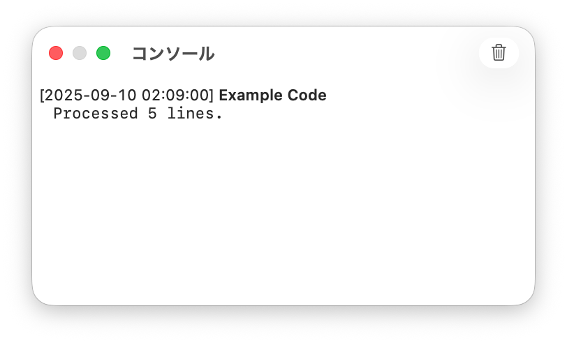

CotEditorのスクリプトメニューからUNIXスクリプトを実行すると、編集中の書類の情報やテキストをスクリプトに渡したり、スクリプトの出力をCotEditor内に反映したりできます。
CotEditorのスクリプトフォルダにスクリプトファイルを作成します。CotEditor用のUNIXスクリプトは、実行環境がMacに用意されていればどんなスクリプト言語でも作成できます。ただし、スクリプトファイルは、.sh、.pl、.php、.rb、.py、.js、.awk、または.swiftのいずれかの拡張子を付ける必要があります。
スクリプトファイルには実行権限を付けておく必要があります。実行権限は、Macの「ターミナル」でファイルを実行可能ファイルにすることで付けられます。
スクリプトフォルダを開く方法やスクリプトの追加/削除について詳しくは、スクリプトで作業を自動化するを参照してください。
UNIXスクリプトの先頭行に#!（shebang）を記述することで、スクリプトを実行するインタープリタを指定します。#!/usr/bin/env python3のように記述すると、PATHから見つかったPython 3インタープリタでスクリプトを実行します。
注記: shebangで/usr/bin/envを使うと、CotEditorはスクリプトの実行時に利用できるPATH環境変数を使ってインタープリタを探します。このPATHは「ターミナル」のシェルでのPATHと異なる場合があります。Pythonなど特定のインタープリタが必要な場合は、#!/path/to/python3のようにインタープリタの絶対パスを指定してください。
現在の書類が保存済みのときは、その書類の絶対ファイルパスが最初のコマンドライン引数としてスクリプトに渡されます。例えば、シェルスクリプトでは$1、Pythonではsys.argv[1]で参照できます。
現在の書類の内容を標準入力としてスクリプトに渡せます。CotEditorからデータを渡すには、スクリプトの冒頭にコメントとして固定テキスト「%%%{CotEditorXInput=xxxx}%%%」を記述し、「xxxx」で受け渡すデータを指定します。このコメントを記述しない場合は「None」と同じで、何も渡されません。
「xxxx」には、以下のいずれかの入力元を指定できます:
| キーワード | 説明 |
|---|---|
Selection | 現在選択しているテキスト |
CurrentLine | 現在挿入ポイントがある行のテキスト |
AllText | 書類のすべてのテキスト |
None | 何も渡さない（デフォルト） |
スクリプトに渡されるテキストのエンコーディングは、書類のテキストエンコーディングに関わらず常にUTF-8です。
スクリプトが標準出力に書き出したテキストは、CotEditorが受け取り、書類などに反映できます。CotEditorで出力を受け取るには、スクリプトの冒頭にコメントとして固定テキスト「%%%{CotEditorXOutput=xxxx}%%%」を記述し、「xxxx」で受け取ったあとの処理を指定します。このコメントを記述しない場合は「Discard」と同じで、出力は無視されます。
「xxxx」には、以下のいずれかの出力先を指定できます:
| キーワード | 説明 |
|---|---|
ReplaceSelection | 現在選択しているテキストを出力内容で置き換えます。 |
ReplaceCurrentLine | 現在挿入ポイントがある行全体を出力内容で置き換えます。 |
ReplaceAllText | 書類のすべてのテキストを出力内容で置き換えます。 |
InsertAfterSelection | 選択範囲の直後に出力内容を挿入します。 |
AppendToAllText | 書類の末尾に出力内容を挿入します。 |
NewDocument | 新規書類を作成し、そこに出力内容を挿入します。 |
Pasteboard | クリップボードに出力内容を格納します。 |
Discard | 何もしない（デフォルト） |
スクリプトからCotEditorに返すテキストのエンコーディングは、書類のテキストエンコーディングに関わらず常にUTF-8でなければなりません。
標準エラー出力に書き出されたテキストは、コンソールウインドウに表示されます。
例えば、以下のPythonスクリプトは、現在の書類の選択範囲内のすべての行の行頭に「>」を追加し、さらに処理した行数をコンソールに表示します。
#!/usr/bin/env python3
# %%%{CotEditorXInput=Selection}%%%
# %%%{CotEditorXOutput=ReplaceSelection}%%%
import sys
count = 0
for line in sys.stdin:
count += 1
print(">" + line.rstrip())
sys.stderr.write("Processed {} lines.".format(count))
このスクリプトをCotEditorのスクリプトメニューから実行すると、次のメッセージがコンソールに表示されます:
